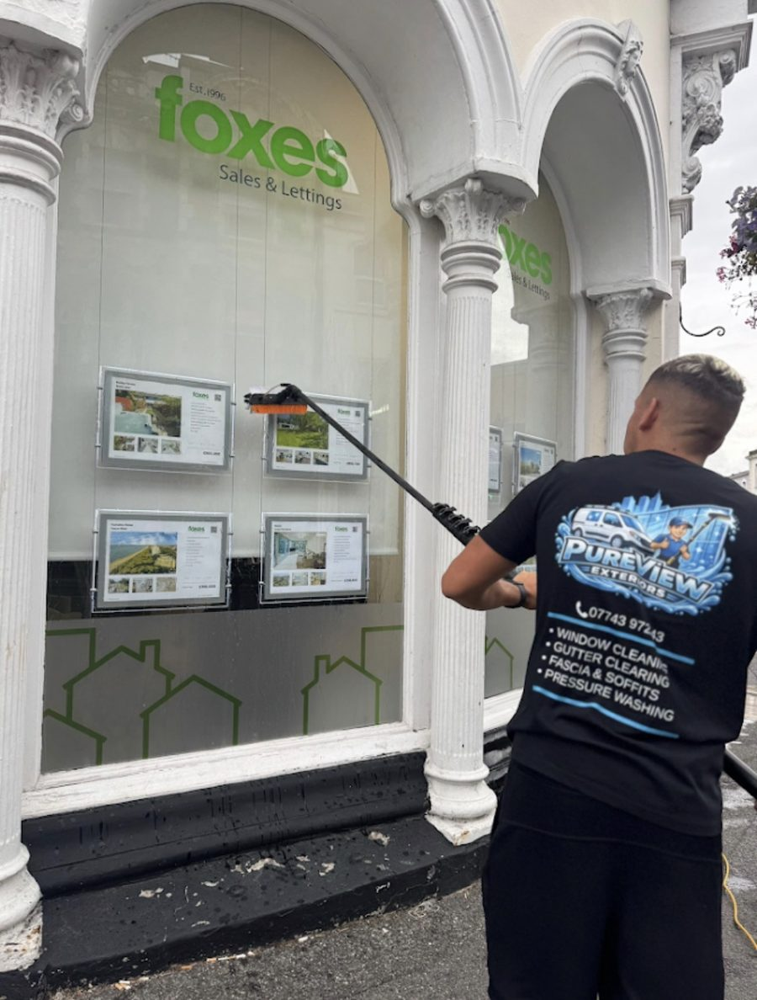

Home / Purified Water
We only use purified water
Every window clean and exterior clean we carry out uses purified water, for a spot free finish that stays cleaner for longer.
Purified water
What is purified water?
Ordinary tap water contains dissolved minerals such as calcium and magnesium. When tap water dries on glass or uPVC, those minerals are left behind as spots, smears and a dull film.
Purified water has been filtered to remove those minerals and impurities before it reaches your property. It cleans by naturally drawing dirt into itself, then rinses away and dries completely clear.
That is why Pureview Exteriors uses purified water for all of our cleaning: windows, frames and sills, fascias, soffits and siding, and the rest of the outside of your home.
- Used on every window and exterior clean
- Dries spot free and streak free
- No detergent left on your property
- Gentle on glass, uPVC and seals

The benefits
Why purified water makes the difference
For window cleaning and exterior cleaning, purified water gives a better finish and is kinder to your home.
Spot free, streak free finish
Purified water has had the dissolved minerals and impurities taken out. With nothing left in it to dry onto the surface, glass and frames dry clear, without the spots and marks tap water can leave.
No detergent residue
Because purified water cleans so effectively on its own, there is no need to leave soap or detergent on your windows. Residue left behind can attract dirt, so a residue free finish helps glass stay cleaner for longer.
Kinder to your property
Rinsing with purified water is gentle on uPVC frames, sills, fascias, soffits, cladding and seals, and avoids the mineral build up that can dull white surfaces over time.
Better for gardens, pets and people
Purified water means far fewer chemicals around your home, so run off into flower beds, lawns and drains is cleaner and safer for children and pets.
Frames and sills cleaned too
The water fed system lets us clean the whole window, including frames and sills, not just the glass, on every visit.
Higher windows from the ground
Water fed poles reach upper floor windows from the ground, so many cleans need fewer ladders, with less disruption to your home and garden.
Purified water for window cleaning
Windows are where the difference shows most. Tap water and soapy water can dry with spots, smears and a hazy film that catches the light. Purified water rinses the glass and dries clear, leaving a bright, even finish.
We clean frames and sills on every visit as well, so the whole window looks cared for. See our window cleaning and commercial window cleaning pages.
Purified water for exterior cleaning
The same benefits apply to the rest of your property. Rinsing fascias, soffits, siding, cladding and uPVC with purified water means no mineral marks and no chemical residue left drying on the surface.
Find out more about our fascia, soffit and siding cleaning, gutter cleaning and clearing and pressure washing.
Free. No obligation. Fast response.
Book your free quote today
Call, WhatsApp, text or email for a fast, friendly response. Or send the form and add a few photos so we can quote quickly.
- Bournemouth
- Christchurch
- Poole